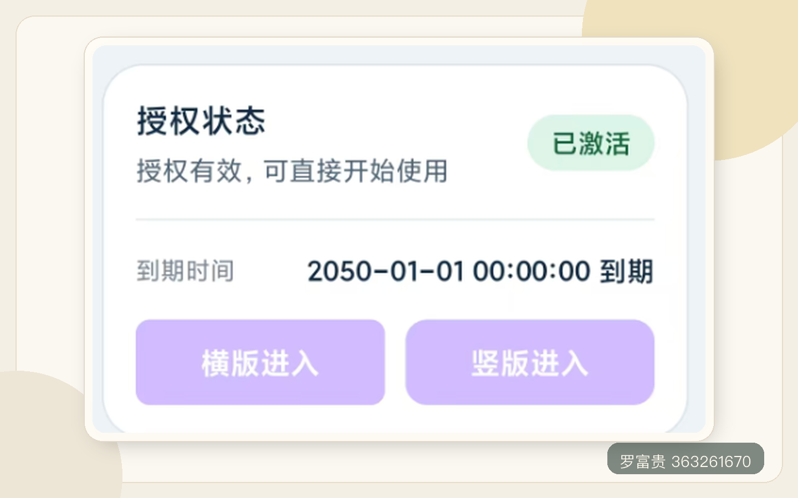
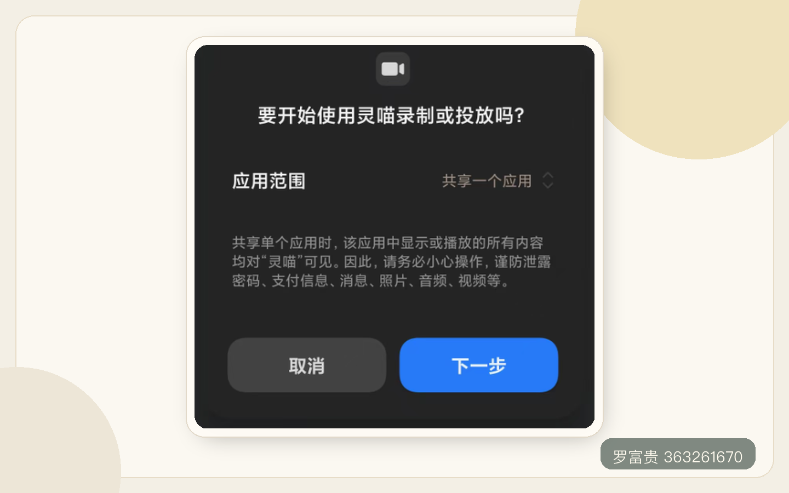
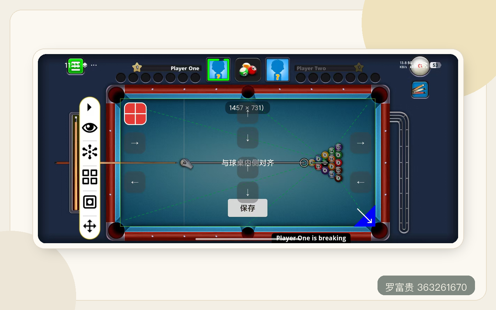
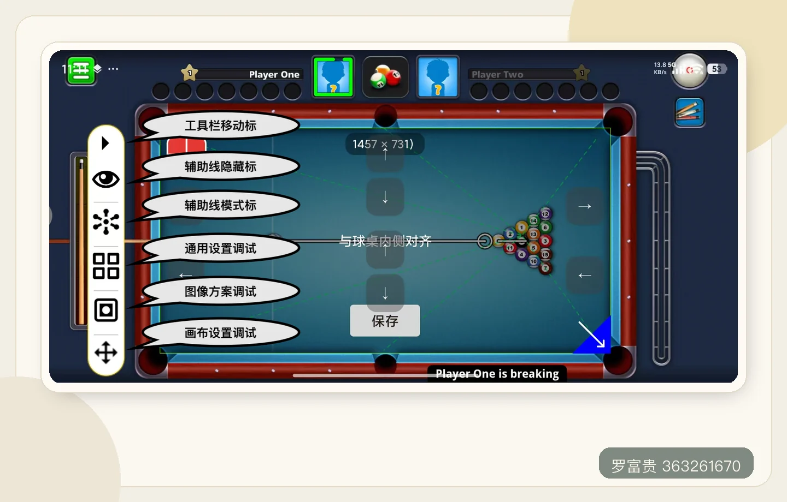
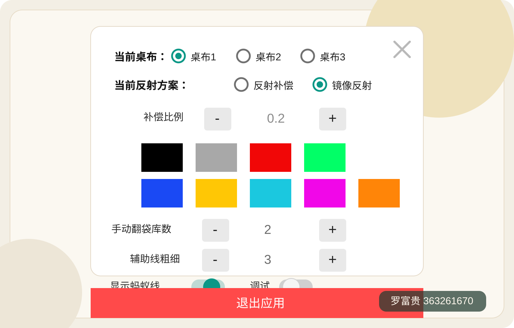
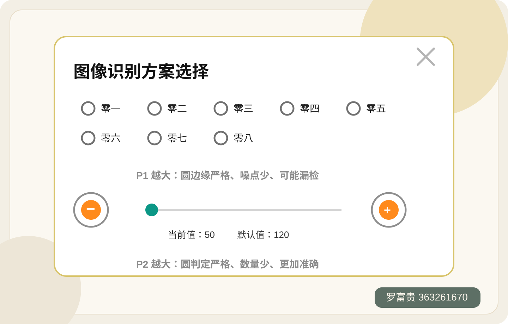

先开启游戏并放到后台
请先打开游戏，并将游戏保持在后台运行状态，然后再返回启动辅助。这样后续授权与画面识别会更稳定，也更不容易选错应用。
Start Here
按“先开游戏、再开辅助、选择进入方式、完成授权、最后对齐桌布”的顺序操作，新用户会更容易一次设置成功。
请先打开游戏，并将游戏保持在后台运行状态，然后再返回启动辅助。这样后续授权与画面识别会更稳定，也更不容易选错应用。
根据游戏当前是横屏还是竖屏，选择对应的“横版进入”或“竖版进入”，避免进入后界面方向不匹配。

启动悬浮窗前，请先授予悬浮窗权限。开始录制时，如果系统提供“单个应用”授权选项，建议优先选择单个应用，减少无关画面被录入。

进入游戏后先进行桌布对齐。对齐时请以球桌内侧边框为准，确认位置无误后再点击“保存”，这样后续辅助线会更稳定。

Feature Guide
这一部分按工具栏按钮的实际使用顺序来讲解，用户可以边看说明边对照配图快速理解各项功能。
点击后可展开或收起工具栏菜单；长按后可拖动工具栏位置，方便根据自己的操作习惯调整到合适区域。
用于控制辅助线的显示状态，点击后可快速开启或关闭辅助线显示，方便在查看线路和观察原始画面之间灵活切换。
点击后可在三种辅助线模式之间循环切换，适用于不同的击球判断场景。
用于调整桌布方案、反射逻辑和辅助线显示效果，是最常用的综合设置面板。
用于切换不同游戏对应的识别方案，并调节 P1、P2 阈值，优化识别准确度。
点击该按钮后，可以重新唤起当前桌布的显示界面，方便再次检查和调整当前桌布配置。



本辅助线更像是一把用于判断线路的“尺子”。
只要你选择的进袋方向正确，工具提供的参考路径通常就是可靠的；而一杆是否能够真正打进，则还取决于你对力度、时机和杆法的控制。
也就是说，工具负责帮助你确认方向，而真正决定击球质量的，仍然是你的手感与实战经验。
建议把辅助线作为线路参考，而不是完全替代自己的判断。尤其是高难度翻袋球，更需要结合实际练习不断调整和熟悉。多练习，才能真正把方向、力度和杆法结合起来。
产品性质说明：本产品为基于纯图像识别技术实现的通用辅助线工具，不属于外挂程序，不修改游戏数据、不侵入游戏进程，也不针对任何单一游戏进行定制开发，主要用于台球线路参考与练习辅助。
平台规则提醒：部分游戏平台，例如天天台球等，可能明确禁止使用辅助线工具。为保障账号安全，请勿在此类平台使用，并建议在使用前先充分了解并遵守对应游戏平台的相关规则。
使用建议：为提高使用过程中的安全性，建议适当隐藏工具界面，并尽量避免向游戏平台授予“获取应用列表”等非必要隐私权限。
责任声明：如因个人原因违反游戏平台规则，或因使用方式不当导致账号受限、封号等问题，不属于本产品责任范围，也不在退款保障范围内。
这种情况通常是因为进入方式选择错误。
竖屏游戏误选了“横版进入”，或者横屏游戏误选了“竖版进入”，都会导致桌布无法正常保存。
建议先确认当前游戏的实际方向，再重新选择对应的进入方式后重新操作。
这种情况通常由以下几种原因导致：
1. 录屏授权时选错了应用。如果系统要求选择“单个应用”，必须选择当前正在运行的游戏，而不是其他界面。建议先打开游戏，再启动辅助；如果之前选错了，退出后重新授权即可。
2. 在辅助运行过程中又开启了手机自带录屏。很多手机自带录屏会占用画面采集权限，导致辅助无法继续识别画面，因此无法正常绘制辅助线。建议退出后重新授权，再重新启动辅助。
3. 图像识别参数选择不正确。不同游戏可能对应不同的识别方案，如果参数不匹配，就可能导致无法正确识别桌面和球体。如果不确定某款游戏对应哪套参数，可以咨询作者。
4. 微信小程序在 Android 16 系统下的兼容问题。如果你使用的是微信小程序，并且手机系统为 Android 16，可能还需要关闭“共享防护”，否则也会影响正常识别和画线。
首先请确认当前选择的翻袋方案是否正确。
需要注意的是，翻袋线路只能作为辅助参考，不能完全替代实战判断，真正决定效果的仍然是实战经验，包括加塞、力度和出杆控制。
另外，有些游戏的物理引擎较为细致，反射结果不只取决于入射角，还会受到白球分离角的影响。
这种情况下，需要根据实时角度、力度和塞位灵活调整，不能完全照着辅助线机械执行。
这种情况大多数是因为手机性能较低，同时后台运行的应用过多，导致系统负载过高，进而自动清理后台进程，造成辅助闪退。
建议清理手机内存，关闭不必要的后台应用，并在系统耗电管理或电池设置中，将该软件设置为“无限制”或“不受限制”。
这种情况通常是因为手机 CPU 性能不足，导致画面识别和实时绘线不够稳定。
建议尽量使用性能更好的设备，优先选择 Android 15 及以上系统机型，同时尽量减少后台运行应用，给辅助功能留出更多性能空间。